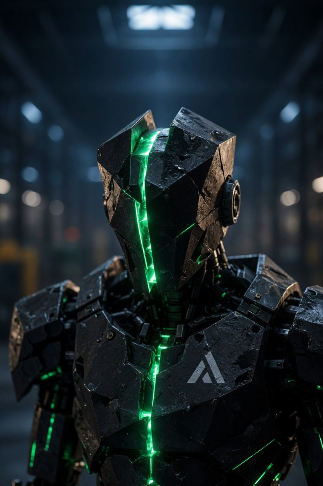
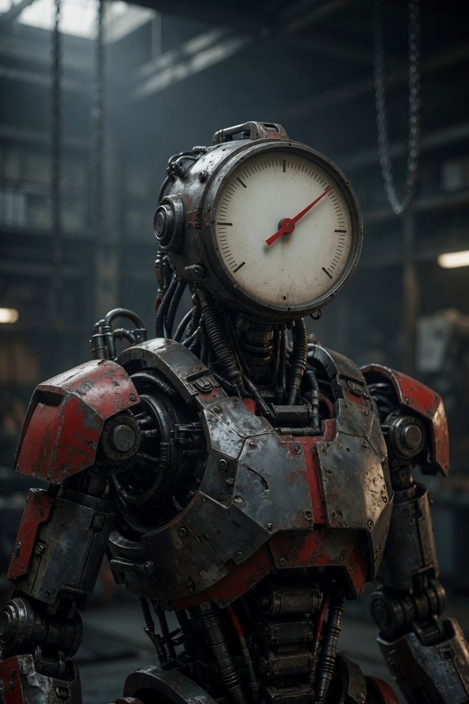

AMEND
Corrections stay visible. A changed conclusion has to show what changed.
SIX INVESTIGATORS. ONE PROCESS.
Bring code, a claim, a product, or a hard question. Six independent investigators look for evidence, challenge the path, and keep the disagreements that the evidence does not settle.
Public accounts are not open yet. The example report is labeled as an example.
Corrections stay visible. A changed conclusion has to show what changed.
Instrument-grade. Built to trace a path instead of decorating a guess.
Pressure, not theater. A hypothesis that cannot take a hit does not continue.
Evidence stays connected. Relationships between receipts are part of the record.

Claim on one side. Evidence on the other. The gap stays open until something closes it.

Mechanical readout. A test result is a measurement, not a mood.
Six investigators are not smarter because there are six of them. They are useful when a claim has to survive search, a receipt, a challenge, and a stop rule.
A seat does not see another seat's open hypothesis until it commits its own.
Source text is hashed. The same bytes return the same receipt.
The investigator who proposes a candidate cannot be the one who kills it.
Fail, unresolved, and known are results. They stay on the record.
Built for code, claims, products, and research that can be checked.
HOW IT WORKS
You submit the target. Investigators search it, challenge the path, and only then talk about a test. The report keeps what died, what survived, and what is still missing.
A repository, a claim, a document, or a question. Scope is part of the submission.
Search the source. Receipts name the file, the line, and the hash.
Reachability first. A path an unprivileged actor cannot walk is stopped.
Reproduction is a later gate. It is not implied by agreement.
Disproved hypotheses, surviving findings, contradictions, and open questions.
THE TEAM
Names stay. Jobs do not. On one investigation a seat may trace a path. On the next it may try to kill that path. Nothing below is a permanent assignment.
Blue-grey. Seams stay visible when a conclusion is revised.
Identity, not a fixed job
Graphite and cyan. Instrumentation for whatever branch is actually open.
Identity, not a fixed job
Industrial steel and amber. Pressure belongs to the challenge, not the costume.
Identity, not a fixed job
Titanium and violet conduits. Links between receipts stay inspectable.
Identity, not a fixed job
Basalt and a green fracture. A contradiction is a split, not a tie to average away.
Identity, not a fixed job
Cast metal and oxide red. The gauge is for a measured result, when a test exists.
Identity, not a fixed job
USE CASES
These are the kinds of work the system is for. Public self-serve testing is not open. See Docs for what the engine can already do.
Authorized review of a codebase. An interesting theory is not an exploit.
Follow a change to the function it calls, with the file hash attached.
Separate what was read from what was inferred.
Ask whether a stated behavior is reachable in the code you were given.
Stress a product claim before treating it as settled.
Put a proposal under the same stop rules as a bug hypothesis.
A scoped question, a body of evidence, and a report that can say unresolved.
CRASH REPORT
Not a live session. These labels can change every investigation.
Vector — tracing a path
Cleave — holding a contradiction
Suture — linking receipts
Forge — challenging a hypothesis
Shear — waiting on a test
Amend — reviewing a correction
Not everything survives. That is the point.